Descripción:
A continuación encontrarás información básica sobre el estudiante Gabriel Alejandro Santana, como edad, intereses, pasatiempos, comida favorita, color favorito, Datos curiosos, entre otros.
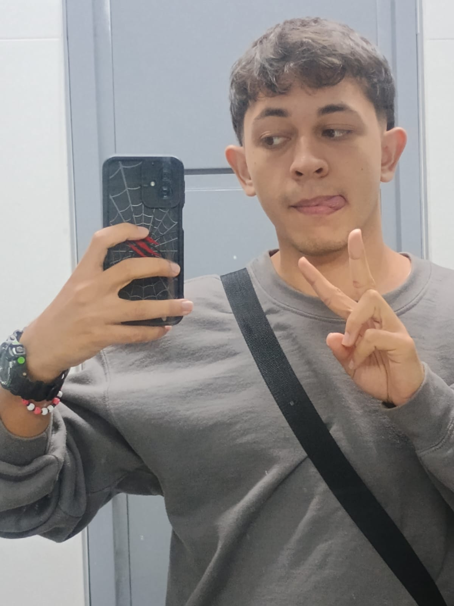
A continuación encontrarás información básica sobre el estudiante Gabriel Alejandro Santana, como edad, intereses, pasatiempos, comida favorita, color favorito, Datos curiosos, entre otros.

Gabriel Alejandro Santana Contreras
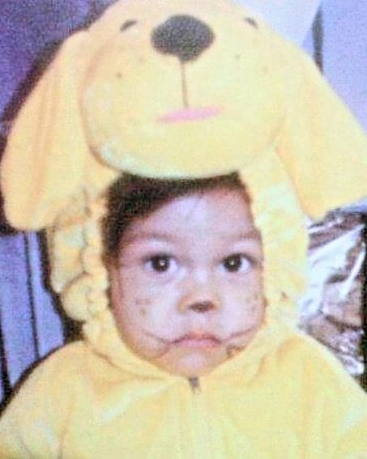
19 años
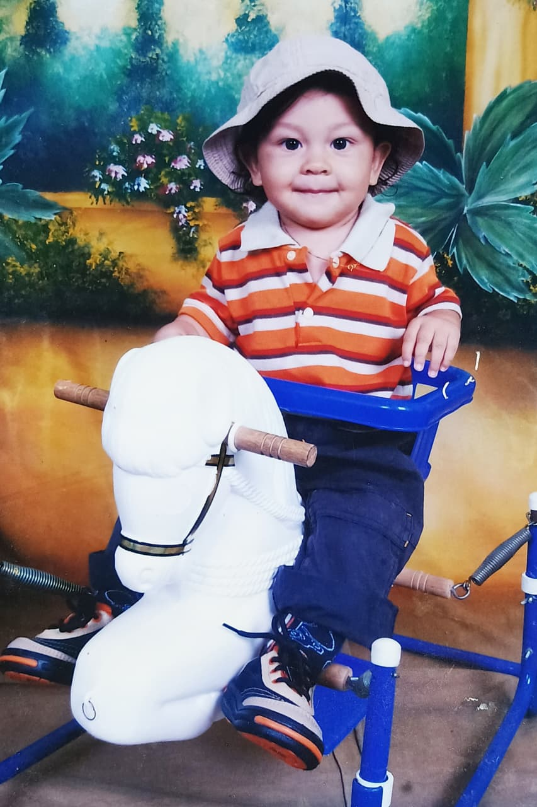
viajes, música, cultura, idiomas, ropa, cantantes, peliculas
Animes Favoritos
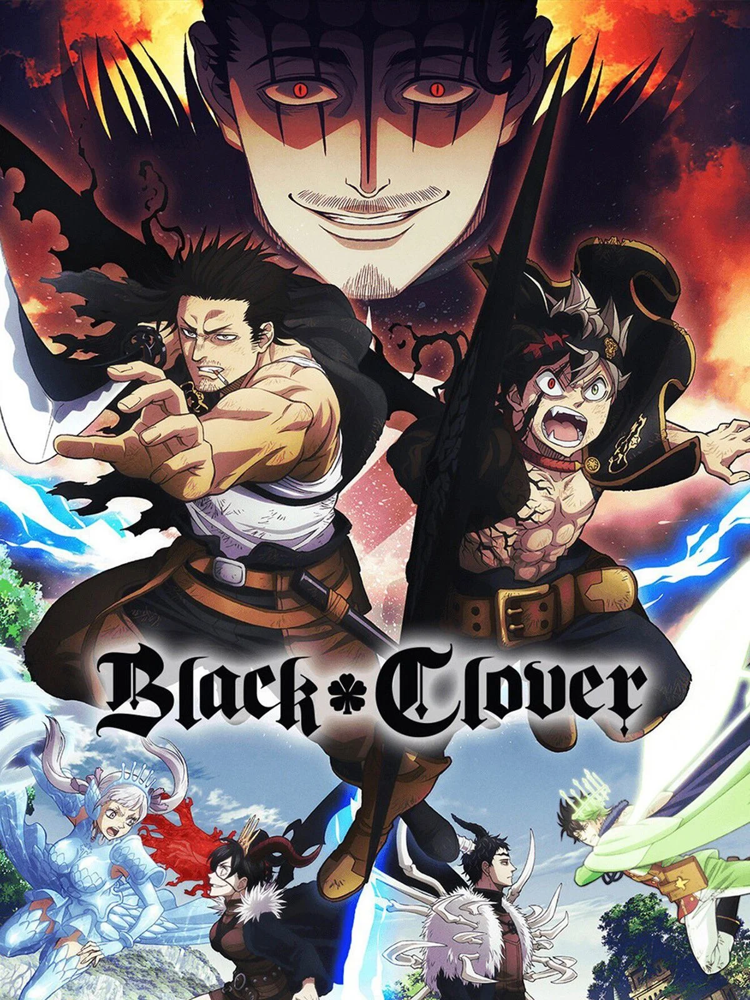
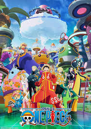
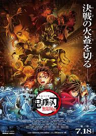
Países Favoritos
escuchar música, tomar fotografías.

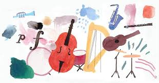
Salchipapa, Lasaña y Pizza
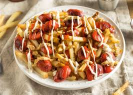

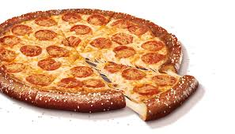
verde, azul, negro, blanco, cafe
soy musicholic, estoy obsesionado con los idiomas
Is it better to speak or to die?
Tengo un gato naranja y uno negro(los quiero mucho, en especial al naranja)
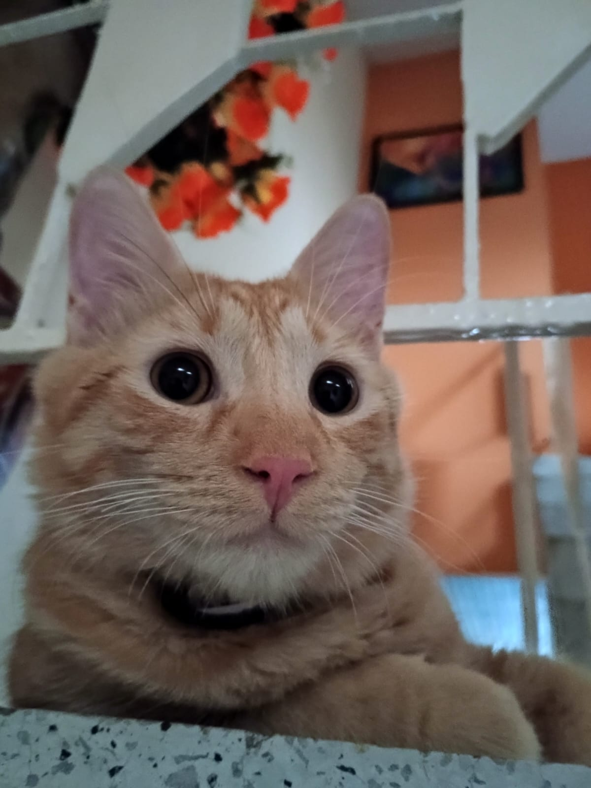
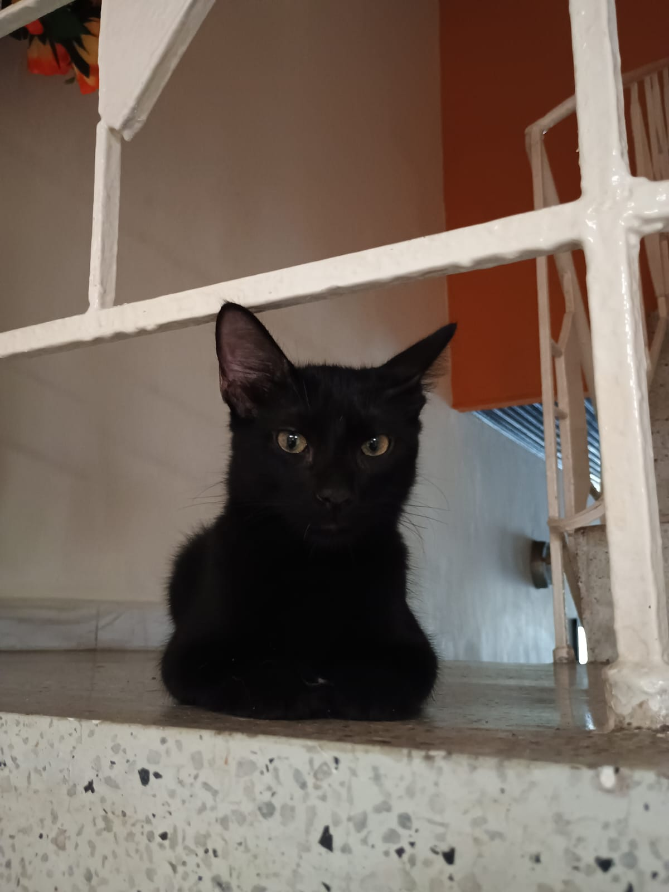